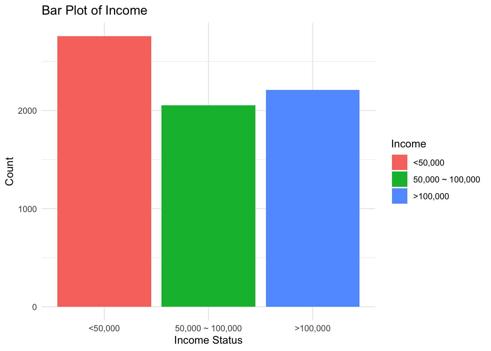
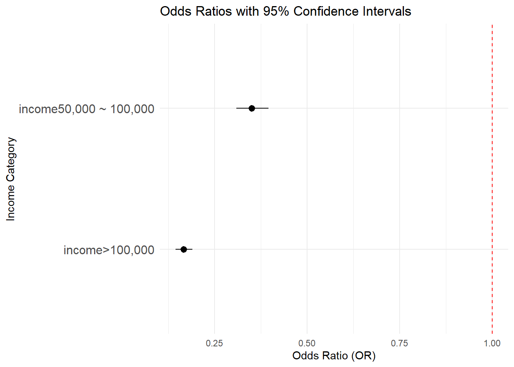
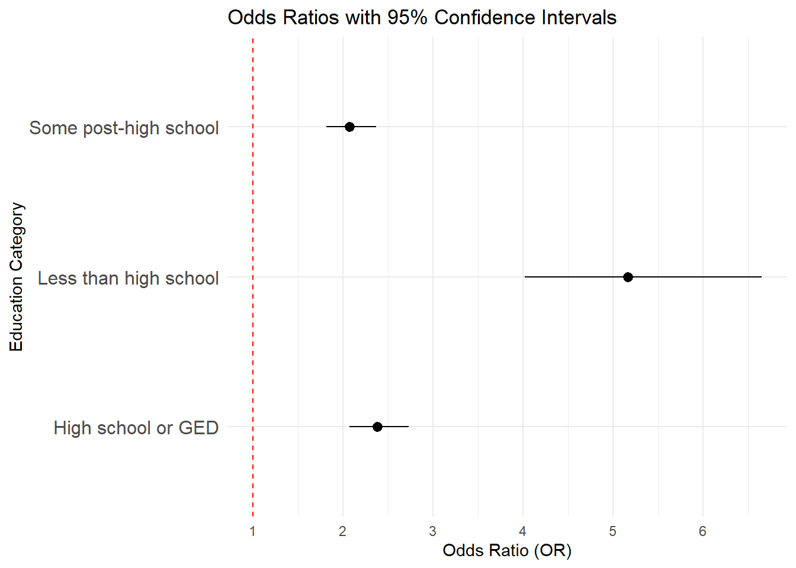
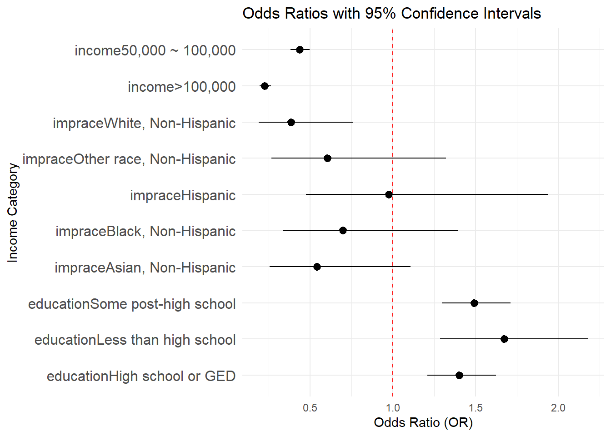

Data Analysis
Regression Model
Visit report for detailed steps on how the data is cleaned.
brfss_22 = read_csv("NYSDOH_BRFSS_Survey_Data_2022.csv")|>
janitor::clean_names()
cleaned_df =
brfss_22 |>
filter(complete.cases(imprace, educag, incomg1, strsmeal_sa, genhlth, diabete4, ment14d, phys14d))|>
select(imprace, educag, incomg1, strsmeal_sa, genhlth, diabete4, ment14d, phys14d)
cleaned_df =
cleaned_df |>
mutate(
income = case_when(
incomg1 %in% c("Less than $15,000", "$25,000 to < $35,000", "$35,000 to < $50,000") ~"<50,000",
incomg1 == "$50,000 to < $100,000" ~ "50,000 ~ 100,000",
incomg1 %in% c ("$100,000 to < $200,000" , "$200,000 or more") ~ ">100,000",
TRUE ~ NA_character_),
education = case_when(
educag == "Did not graduate High School" ~ "Less than high school",
educag == "Graduated High School" ~ "High school or GED",
educag == "Attended College or Technical School" ~ "Some post-high school",
educag == "Graduated from College or Technical School" ~ "College graduate"
),
food_insecure = case_when(
strsmeal_sa %in% c("Rarely","Sometimes","Usually", "Always") ~ 1,
strsmeal_sa == "Never" ~ 0),
health = case_when(
genhlth %in% c("Good", "Very good", "Excellent") ~ 1,
genhlth %in% c("Fair", "Poor") ~ 0),
physical_health = case_when(
phys14d %in% c("Zero days when physical health not good") ~ 0,
phys14d %in% c("1-13 days when physical health not good", "14+ days when physical health not good") ~ 1),
mental_health = case_when(
ment14d %in% c("Zero days when mental health not good") ~ 0,
ment14d %in% c("1-13 days when mental health not good", "14+ days when physical health not good") ~ 1)
)|>
filter(!is.na(income), !is.na(education), !is.na(physical_health), !is.na(mental_health))|>
select(-incomg1, -educag, -strsmeal_sa, -genhlth, -phys14d, -ment14d)Key Socioeconomic Factors Distribution
ggplot(data = cleaned_df, aes(x = imprace, fill = imprace))+
geom_bar() +
labs(
title = "Distribution of Race/Ethnicity",
x = "Race/Ethnicity",
y = "Count"
) +
theme_minimal() +
theme(axis.text.x = element_text(angle = 45, hjust = 1)) 
This bar graph illustrates the distribution of race/ethnicity in the dataset. The categories include American Indian/Alaskan Native, Asian, Black, Hispanic, Other Race, and White, all specified as Non-Hispanic except for the Hispanic group. Among these groups, White, Non-Hispanic individuals dominate, with the highest count exceeding 6,000. The second most prevalent group is Hispanic, followed by Black, Non-Hispanic, while Other Race, Non-Hispanic, and Asian, Non-Hispanic, show significantly smaller counts. The American Indian/Alaskan Native, Non-Hispanic category represents the smallest group.
ggplot(cleaned_df, aes(x = "", fill = education)) +
geom_bar(width = 1, stat = "count") +
coord_polar(theta = "y") +
labs(
title = "Distribution of Education Levels",
fill = "Education Level"
) +
theme_void() +
theme(legend.position = "right")
This pie chart shows the distribution of education levels within a dataset. The largest portion of the chart is represented by college graduates, shown in red, indicating that a significant proportion of individuals have completed higher education. The second-largest category, represented in purple, corresponds to individuals with some post-high school education. High school graduates or those with a GED, shown in green, form a smaller segment, while the smallest portion of the chart, in teal, represents individuals with less than a high school education.
ggplot(cleaned_df, aes(x = as.factor(food_insecure), fill = as.factor(food_insecure))) +
geom_bar() +
scale_fill_manual(values = c("0" = "lightblue", "1" = "pink"), labels = c("Not Food Insecure", "Food Insecure")) +
labs(
title = "Distribution of Food Insecurity",
x = "Food Insecurity",
y = "Count",
fill = "Status"
) +
theme_minimal()
This bar graph presents the distribution of food insecurity status among individuals in the dataset. The largest group, represented in light blue, comprises individuals who are not food insecure, with a count exceeding 4,000. The second-largest group, shown in pink, represents individuals who are food insecure, numbering slightly over 2,000. A very small proportion, represented in gray, corresponds to missing data (NA) for food insecurity status.
cleaned_df =
cleaned_df |>
mutate(
imprace = as.factor(imprace),
income = as.factor(income),
education = as.factor(education)
)Logistic Regression Models
Is income associated with food insecure?
logit_income =
glm(formula = food_insecure ~ income, data = cleaned_df, family = binomial)
exp_income = exp(cbind(OR=coef(logit_income),confint(logit_income)))
knitr::kable(exp_income)| OR | 2.5 % | 97.5 % | |
|---|---|---|---|
| (Intercept) | 0.9625963 | 0.8772272 | 1.0562152 |
| income>100,000 | 0.1755147 | 0.1502525 | 0.2045577 |
| income50,000 ~ 100,000 | 0.3792408 | 0.3299022 | 0.4355688 |
Intercept: The odds ratio for the intercept (1.171) represents the baseline odds of being food insecure when income is less than 50,000. Since the 95% confidence interval (1.079–1.272) does not include 1, it is statistically significant.
OR: Income > 100,000: The odds ratio (0.166) indicates that individuals with an income greater than $100,000 have 83.4% lower odds of being food insecure compared to the income group less than 50,000.
Income 50,000–100,000: The odds ratio (0.349) indicates that individuals with an income between $50,000 and 100,000 have 65.1% lower odds of being food insecure compared to the income group less than 50,000.
Statistical significance: confidence intervals of OR of both predictor levels exclude 1, indicating that they are statistically associated with food insecure.
Confidence Interval
ci_income = as.data.frame(exp_income)
ci_income =
ci_income |>
rownames_to_column("Variable") |>
filter(Variable != "(Intercept)") ggplot(ci_income, aes(y = Variable, x = OR, xmin = `2.5 %`, xmax = `97.5 %`)) +
geom_pointrange() +
geom_vline(xintercept = 1, linetype = "dashed", color = "red") +
labs(
title = "Odds Ratios with 95% Confidence Intervals",
x = "Odds Ratio (OR)",
y = "Income Category"
) +
theme_minimal() +
theme(axis.text.y = element_text(size = 12))
Is race associated with food insecure?
logit_race =
glm(food_insecure ~ imprace, data = cleaned_df, family = binomial)
exp_race = exp(cbind(OR=coef(logit_race),confint(logit_race)))
knitr::kable(exp_race)| OR | 2.5 % | 97.5 % | |
|---|---|---|---|
| (Intercept) | 1.1538462 | 0.5479650 | 2.4622389 |
| impraceAsian, Non-Hispanic | 0.3791667 | 0.1704651 | 0.8326280 |
| impraceBlack, Non-Hispanic | 0.6137705 | 0.2821394 | 1.3182904 |
| impraceHispanic | 1.0067340 | 0.4646362 | 2.1536196 |
| impraceOther race, Non-Hispanic | 0.4333333 | 0.1782453 | 1.0366315 |
| impraceWhite, Non-Hispanic | 0.2686804 | 0.1254936 | 0.5676891 |
Intercept: The odds ratio for the intercept (1.6) represents the odds of being food insecure for the reference group (American Indian/Alaskan Native).
OR: Asian, Non-Hispanic: The odds ratio (0.318) indicates that Asian, Non-Hispanic individuals have 68.2% lower odds of being food insecure compared to American Indians.
Black, Non-Hispanic: The odds ratio (0.528) suggests that Black, Non-Hispanic individuals have 47.2% lower odds of being food insecure compared to American Indians.
Hispanic: The odds ratio (0.832) implies that Hispanic individuals have 16.8% lower odds of being food insecure compared to American Indians.
Other Race, Non-Hispanic: The odds ratio (0.426) indicates that individuals of Other Race, Non-Hispanic have 57.4% lower odds of being food insecure compared to American Indians.
White, Non-Hispanic: The odds ratio (0.230) suggests that White, Non-Hispanic individuals have 77% lower odds of being food insecure compared to American Indians.
Statistical significance: confidence intervals of OR of all predictor levels except Black and Hispanic exclude 1, indicating that these predictor levels are statistically significant.
Confidence Interval
ci_race = as.data.frame(exp_race)
ci_race =
ci_race |>
rownames_to_column("Variable") |>
filter(Variable != "(Intercept)") ggplot(ci_race, aes(y = Variable, x = OR, xmin = `2.5 %`, xmax = `97.5 %`)) +
geom_pointrange() +
geom_vline(xintercept = 1, linetype = "dashed", color = "red") +
labs(
title = "Odds Ratios with 95% Confidence Intervals",
x = "Odds Ratio (OR)",
y = "Income Category"
) +
theme_minimal() +
theme(axis.text.y = element_text(size = 12))
Is education associated with food insecure?
logit_edu =
glm(food_insecure ~ education, data = cleaned_df, family = binomial)
exp_edu = exp(cbind(OR=coef(logit_edu),confint(logit_edu)))
knitr::kable(exp_edu)| OR | 2.5 % | 97.5 % | |
|---|---|---|---|
| (Intercept) | 0.264363 | 0.242041 | 0.2883149 |
| educationHigh school or GED | 2.400981 | 2.066532 | 2.7889341 |
| educationLess than high school | 5.582203 | 4.289584 | 7.2915963 |
| educationSome post-high school | 2.048004 | 1.772791 | 2.3652860 |
Intercept: The odds ratio for the intercept (0.309) represents the odds of being food insecure for individuals in the reference group (College graduates).
OR: High School or GED: The odds ratio (2.444) indicates that individuals with a high school diploma or GED have 144.4% higher odds of being food insecure compared to college graduates.
Less than High School: The odds ratio (5.241) suggests that individuals with less than a high school education have 424.1% higher odds of being food insecure compared to college graduates.
Some Post-High School: The odds ratio (2.119) indicates that individuals with some post-high school education have 111.9% higher odds of being food insecure compared to college graduates.
Statistical significance: confidence intervals of OR of all three predictor levels exclude 1, making these results statistically significant.
Confidence Interval
ci_edu = as.data.frame(exp_edu)
ci_edu =
ci_edu |>
rownames_to_column("Variable") |>
filter(Variable != "(Intercept)") ggplot(ci_edu, aes(y = Variable, x = OR, xmin = `2.5 %`, xmax = `97.5 %`)) +
geom_pointrange() +
geom_vline(xintercept = 1, linetype = "dashed", color = "red") +
labs(
title = "Odds Ratios with 95% Confidence Intervals",
x = "Odds Ratio (OR)",
y = "Income Category"
) +
theme_minimal() +
theme(axis.text.y = element_text(size = 12))
Are race, education, and income associated with food insecure?
logit_all =
glm(food_insecure ~ education + income + imprace, data = cleaned_df, family = binomial)
exp_all = exp(cbind(OR=coef(logit_all),confint(logit_all)))
knitr::kable(exp_all)| OR | 2.5 % | 97.5 % | |
|---|---|---|---|
| (Intercept) | 1.3061957 | 0.5915117 | 2.9363848 |
| educationHigh school or GED | 1.3776536 | 1.1658961 | 1.6265583 |
| educationLess than high school | 1.8150326 | 1.3504507 | 2.4438710 |
| educationSome post-high school | 1.4617004 | 1.2512580 | 1.7063711 |
| income>100,000 | 0.2451549 | 0.2066958 | 0.2902541 |
| income50,000 ~ 100,000 | 0.4789864 | 0.4131403 | 0.5550137 |
| impraceAsian, Non-Hispanic | 0.5937271 | 0.2546111 | 1.3620134 |
| impraceBlack, Non-Hispanic | 0.7509072 | 0.3297541 | 1.6810226 |
| impraceHispanic | 1.0624049 | 0.4682561 | 2.3688189 |
| impraceOther race, Non-Hispanic | 0.5913135 | 0.2311089 | 1.4850650 |
| impraceWhite, Non-Hispanic | 0.4116274 | 0.1837100 | 0.9064304 |
Statistical Significant Predictors:
Education: Individuals with a high school diploma or GED have 40.1% higher odds of being food insecure compared to college graduates. Individuals with less than a high school education have 67.1% higher odds of being food insecure compared to college graduates. Individuals with some post-high school education have 49.1% higher odds of being food insecure compared to college graduates.
Income: Individuals earning over 100,000 have 77.2% lower odds of being food insecure compared to those earning ≤ $50,000. Individuals earning between $50,000 and $100,000 have 56.3% lower odds of being food insecure compared to those earning ≤ $50,000.
Race/Ethnicity: White, Non-Hispanic individuals have 61.4% lower odds of being food insecure compared to American Indians.
Summary: Education and income levels show significant associations with food insecurity, with lower education and income levels increasing odds of food insecurity.Among racial/ethnic groups, only White, Non-Hispanic individuals show significantly lower odds of food insecurity compared to American Indians.
Confidence Interval
ci_all = as.data.frame(exp_all)
ci_all =
ci_all |>
rownames_to_column("Variable") |>
filter(Variable != "(Intercept)") ggplot(ci_all, aes(y = Variable, x = OR, xmin = `2.5 %`, xmax = `97.5 %`)) +
geom_pointrange() +
geom_vline(xintercept = 1, linetype = "dashed", color = "red") +
labs(
title = "Odds Ratios with 95% Confidence Intervals",
x = "Odds Ratio (OR)",
y = "Income Category"
) +
theme_minimal() +
theme(axis.text.y = element_text(size = 12))